무선설비기사 (2016-06-11 기출문제)
1과목: 디지털 전자회로
1. 다음 그림은 정류회로의 입력파형과 출력파형을 나타내었다. 주어진 입출력 특성을 만족시키는 정류회로는? (단, 다이오드의 문턱전압은 0.7[V]이고, 변압기의 권선비는 1:1이라 가정한다.)
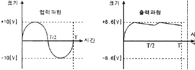
- 반파정류회로
- 유도성 중간탭 전파정류회로
- 2배압 정류회로
- 용량성 필터를 갖는 브리지 전파정류회로
(정답률: 86%)

2. 바이어스(Bias) 전압에 따라 정전용량이 달라지는 다이오드는?
- 제너(Zener) 다이오드
- 포토(Photo) 다이오드
- 바렉터(Varactor) 다이오드
- 터널(Tunnel) 다이오드
(정답률: 82%)
3. 다음 회로의 직류 부하선으로 적합한 것은?
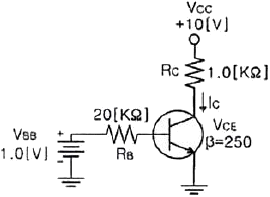
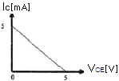
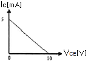
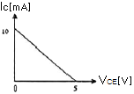
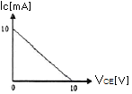
(정답률: 77%)
4. 부궤환 증폭기에서 부궤환량을 증가시켰을 때 증폭기의 대역폭은?
- 감소한다.
- 증가한다.
- 영향을 받지 않는다.
- 왜곡이 발생한다.
(정답률: 65%)
5. 다음 중 차동증폭기(Differential Amplifier)의 특징에 대한 설명으로 틀린 것은?
- 직류와 교류 모두 증폭할 수 있다.
- 부품의 절대치가 변동하여도 증폭이 거의 안정적이다.
- 작은 온도 변화에도 동작이 안정적이다.
- 종합증폭도는 에미터 접지방식보다 크다.
(정답률: 65%)
6. 전력증폭기의 출력측 기본파 전압이 50[V]이고, 제2 및 제3 고조파의 전압이 각각 4[V]와 3[V]일 때 왜율은?
- 5[%]
- 10[%]
- 15[%]
- 20[%]
(정답률: 82%)
7. 발진회로의 궤환루프의 감쇠가 0.5인 경우 발진을 유지하기 위한 증폭 회로의 전압이득은?
- 전압이득은 2.0이어야 한다.
- 전압이득은 1.5이어야 한다.
- 전압이득은 1.0이어야 한다.
- 전압이득은 0.5보다 적어야 한다.
(정답률: 81%)
8. 궤환에 의한 발진회로에서 증폭기의 이득을 A, 궤환 회로의 궤환율을 β라고 할 때 발진이 지속되기 위한 조건은?
- βA=1
- βA＜1
- βA＜0
- βA=0
(정답률: 83%)
9. 다음의 FM 변조지수 중 대역폭이 가장 넓은 것은?
- 1
- 2
- 3
- 4
(정답률: 82%)
10. AM변조에서 100[%] 변조인 경우 그 변조 출력 전력이 6[kW]일 때, 반송파 성분의 전력은 얼마인가?
- 1[kW]
- 1.5[kW]
- 2[kW]
- 4[kW]
(정답률: 71%)
11. 다음 중 정보 전송 기술에서 디지털 신호 재생 중계기의 기능에 해당되지 않는 것은?
- 타이밍
- 에러 정정
- 파형 등화
- 식별 재생
(정답률: 77%)
12. 이상적인 펄스 파형에서 펄스폭이 30[μs]이고, 펄스의 반복 주파수가 1[kHz]일 때 점유율?
- 3[%]
- 7[%]
- 30[%]
- 70[%]
(정답률: 67%)
13. 펄스의 중요한 변위에 있어 상승 모서리에서 잠시 흔들리는 일그러짐을 무엇이라고 하는가?
- Overshoot
- Undershoot
- Sag
- Spark
(정답률: 80%)
14. 다음 회로에서 VCC=5[V]일 때 출력 전압은? (단, A=5[V], B=0[V]이다.)
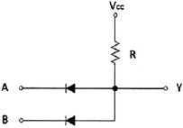
- 0[V]
- 2.5[V]
- 5[V]
- 7.5[V]
(정답률: 78%)
15. 다음 회로에서 정논리의 경우 게이트 명칭은?
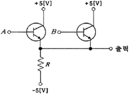
- AND 게이트
- OR 게이트
- NAND 게이트
- NOR 게이트
(정답률: 83%)
16. 논리식
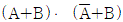
를 간단히 하면?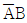
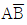
- B
- A
(정답률: 77%)
17. JK-Flip Flop에서 J입력과 K입력이 모두 1이고 CP=1일 때 출력은?
- 출력은 반전한다.
- Set출력은 1, Reset출력은 0이다.
- Set출력은 0, Reset출력은 1이다.
- 출력은 1이다.
(정답률: 80%)
18. 25진 리플 카운터를 설계할 경우 최소한 몇 개의 플립플롭이 필요한가?
- 4개
- 5개
- 6개
- 7개
(정답률: 85%)
19. 다음 소자 중에서 n개의 입력을 받아서 제어 신호에 의해 그 중 1개만을 선택하여 출력하는 것은?
- Multiplexer
- Demultiplexer
- Encoder
- Decoder
(정답률: 82%)
20. 다음 중 전감산기의 입력과 관계 없는 것은?
- 감수
- 피감수
- 상위에서 자리 빌림
- 하위에서 자리 빌림
(정답률: 80%)
2과목: 무선통신 기기
21. 정현파 신호의 반송파를 60[%] 진폭변조(AM)한 송신기의 반송파 전력이 600[W]일 경우 피변조파 전력은 얼마인가?
- 908[W]
- 808[W]
- 708[W]
- 608[W]
(정답률: 78%)
22. 다음 중 수신기의 동작상태가 얼마나 안정한가를 나타내는 안정도에 미치는 영향이 아닌 것은?
- 국부발진 주파수의 변동
- 증폭도의 변동
- 부품의 경년변화에 의한 성능열화
- 변조도의 변동
(정답률: 59%)
23. 다음 중 FM 수신기에 대한 설명으로 틀린 것은?
- 점유주파수대역폭이 AM 방식보다 넓다.
- 잡음에 의한 일그러짐이 AM 방식보다 많다.
- 신호대 잡음비가 AM 방식에 비해 양호하다.
- 진폭 제한기에 의한 진폭성분의 잡음을 감소시킬 수 있다.
(정답률: 80%)
24. 그림과 같이 FM 변조기를 이용하여 PM 변조신호를 발생할 경우 괄호 안에 들어갈 내용으로 적합한 것은?
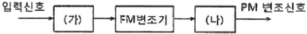
- (가) 미분기 (나) 없음
- (가) 적분기 (나) 없음
- (가) 없음 (나) 미분기
- (가) 없음 (나) 적분기
(정답률: 77%)
25. 다음 중 FSK(Frequency Shift Keying) 신호에 대한 설명으로 부적절한 것은?
- FSK 신호는 진폭이 일정하기 때문에 채널의 진폭변화에 덜 민감하다.
- FSK는 정보 데이터에 따라서 반송파의 순시주파수가 변경되는 방식이다.
- FSK 신호는 주파수가 다른 2개의 OOK(On/Off Keying) 신호의 합으로 볼 수 있다.
- FSK 신호의 대역폭은 ASK(Amplitude Shift Keying)나 PSK(Phase Shift Keying)에 비하여좁다.
(정답률: 82%)
26. 수신된 펄스열의 눈 형태(Eye Pattern)을 관찰하면 수신기의 오류확률을 짐작할 수 있다. 수신된 신호를 표본화하는 최적의 시간은 언제인가?
- 눈의 형태(Eye Patter)가 가장 크게 열리는 순간
- 눈의 형태(Eye Patter)가 닫히는 순간
- 눈의 형태(Eye Patter)가 중간 크기인 순간
- 눈의 형태(Eye Patter)가 여러 개 겹치는 순간
(정답률: 88%)
27. QAM(Quadrature Amplitude Modulation) 복조기에서 In-Phase 기준 신호가 I 성분을 뽑아내는데 사용되는 것은?
- 동조회로
- 위상검출기
- 저역통과필터
- 전압제어 발진기
(정답률: 77%)
28. 다음 중 NTSC 방식의 TV가 사용하는 주사방식은?
- 순차주사
- 비월주사
- 수직주사
- 수평주사
(정답률: 75%)
29. 다음 중 전파 지연시간을 이용하는 항법 장치는?
- VOR(Very High Frequency Omnidirectional Range)
- INS(Inertial navigation System)
- DME(Distance measuring Equipment)
- GPS(Global Positioning System)
(정답률: 83%)
30. 다음 중 계기 착륙방식인 ILS(Instrument landing System)의 구성 요소가 아닌 것은?
- Localizer(방위각 제공 시설)
- Glide Path(활공각 제공 시설)
- MLS(초고주파 착륙 시설)
- Marker Beacon(마커 비컨)
(정답률: 76%)
31. 다음 중 축전지의 충전 방식이 아닌 것은?
- 속충전
- 저충전
- 균등충전
- 부동충전
(정답률: 80%)
32. 다음 중 축전지의 초충전에 대한 설명으로 옳은 것은?
- 축전지를 제조한 후 마지막으로 걸어주는 충전이다.
- 초충전시 12[V] 정도에서 온도를 급상승시킨다.
- 충전 전류는 10[%] 내외로 한다.
- 충전 시간은 70~80시간 정도로 한다.
(정답률: 82%)
33. 다음 중 정류회로의 특성에 대한 설명으로 틀린 것은?
- 전압변동률은 부하전류가 커지면 커질수록 증가하게 된다.
- 맥동률은 부하전류가 작아지면 작을수록 감소하게 된다.
- 파형률은 백분율로 하지 않으며, 부하전류가 증가하면 커진다.
- 정류효율의 값이 크면 교류가 직류로 변환되는 과정에서 손실이 적게 된다.
(정답률: 77%)
34. 다음 중 상호변조(Intermodulation)의 방지대책에 대한 설명으로 틀린 것은?
- 증폭기를 비선형 영역에서 동작시키지 않는다.
- 필터를 이용하여 통과대역 밖의 신호를 잘라낸다.
- 다중화 방식으로 FDM(Frequency Division Multiplexing)을 사용한다.
- 입력신호의 레벨을 너무 크게 하지 않는다.
(정답률: 68%)
35. 송신기에 안테나 대신 16[Ω]의 무유도 저항을 연결한 후, 측정한 전류값이 5[A]일 경우 송신기의 출력 값은 얼마인가?
- 300[W]
- 400[W]
- 500[W]
- 600[W]
(정답률: 84%)
36. 다음 중 스퓨리어스 발사에 포함되지 않는 것은?
- 고조파 발생
- 저조파 발생
- 기생발사
- 대역외 발사
(정답률: 66%)
37. LC 회로에서 공진 주파수가 1,200[kHz]일 때 고주파 1[A]가 흐르고, 980[kHz]와 1,020[kHz]에서
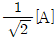
의 전류가 흘렀을 경우 코일의 Q값은?- 30
- 40
- 50
- 60
(정답률: 62%)
38. 다음 중 안테나 실효고 측정방법 중의 하나인 표준 안테나에 의한 방법에서 표준 안테나로 사용되는 안테나는?
- 롬빅 안테나
- 야기 안테나
- 루프 안테나
- 브라운 안테나
(정답률: 73%)
39. 다음 중 축전지 용량이 감소하는 원인으로 적합하지 않는 것은?
- 전해액의 부족
- 전해액 비중의 감소
- 극판의 부식 및 균열
- 백색 황산연의 제거
(정답률: 88%)
40. 기전력이 2[V]인 2차 전지 60개를 직렬로 접속한 전원에서 20[A]의 방전전류를 얻고자 한다. 전원단자의 전압은 몇 [V]가 되는가? (단, 2차 전지 1개당 내부저항은 0.01[Ω]이다.)
- 108[V]
- 110[V]
- 112[V]
- 114[V]
(정답률: 74%)
3과목: 안테나 공학
41. 다음 중 거리에 따라 가장 감쇠가 급격하게 발생하는 것은?
- 정전계
- 유도계
- 복사전계
- 복사자계
(정답률: 79%)
42. 다음 중 TEM파(Transverse Electromagnetic Wave)에 대한 설명으로 옳은 것은?
- 전파 진행방향에 전계성분만 존재하고 자계성분은 존재하지 않는다.
- 전파 진행방향에 자계성분만 존재하고 전계성분은 존재하지 않는다.
- 전파 진행방향에 전계, 자계성분이 모두 존재하지 않는다.
- 전파 진행방향에 전계, 자계성분이 모두 존재한다.
(정답률: 85%)
43. 비유전율이 25이고, 비투자율이 1인 매질 내를 전파하는 전자파의 속도는 자유공간을 전파할 때와 비교하여 약 몇 배의 속도인가?
- 0.1배
- 0.2배
- 0.3배
- 0.5배
(정답률: 73%)
44. 다음 중 자유공간에서 전력밀도 P를 옳게 표현한 식은? (단, E는 전계의 세기, H는 자계의 세기이다.)
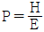
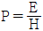
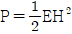
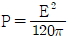
(정답률: 83%)
45. 다음 중 정재파에 대한 설명으로 틀린 것은?
- 진행파와 반사파가 합성된 파를 말한다.
- 전압 분포상태가 (λ/2)거리마다 최대치가 있다.
- 전압ㆍ전류의 위상은 선로상의 각 점에 따라 서로 다르다.
- 진행파와 비교할 때 전송손실이 크다.
(정답률: 75%)
46. 다음 중 동조 급전선과 비동조 급전선에 대한 설명으로 틀린 것은?
- 정재파가 분포되어 잇는 급전선을 동조 급전선이라 한다.
- 비동조 급전선은 동조 급전선보다 전력의 손실이 적다.
- 동조 급전선은 거리가 짧을 때, 비동조 급전선은 길 때 주로 사용한다.
- 비동조 급전선은 정합장치가 불필요하다.
(정답률: 75%)
47. 그림과 같이 도선의 길이가 λ/4인 선단을 단락할 경우 ab점에서 본 임피던스는?
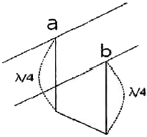
- 0
- 유도성
- 용량성
- ∞
(정답률: 81%)
48. 다음 중 도파관은 어떠한 특성을 가진 여파기(Filter)로 볼 수 있는가?
- 대역소거여파기(Band Rejection Filter)
- 저역통과여파기(Low Pass Filter)
- 고역통과여파기(High Pass Filter)
- 대역통과여파기(Band Pass Filter)
(정답률: 76%)
49. 반치각이란 주엽의 최대 복사 강도(방향)에 대해 몇 [dB]가 되는 두 방향 사이의 각을 말하는가?
- 0[dB]
- -3[dB]
- -6[dB]
- -12[dB]
(정답률: 80%)
50. 다음 중 안테나의 Top Loading 효과에 대한 설명으로 옳은 것은?
- 실효길이의 증가
- 고유주파수의 증가
- 방사저항의 감소
- 방사효율의 감소
(정답률: 77%)
51. 다음 중 VHF 대역에서 통신 가능 거리를 증가시키기 위한 방법으로 틀린 것은?
- 안테나 높이를 높인다.
- 이득이 높은 안테나를 사용한다.
- 지향성이 예리한 안테나를 사용한다.
- 안테나의 방사각도를 크게 한다.
(정답률: 78%)
52. 복사저항이 200[Ω]이고, 손실저항이 35[Ωl인 안테나의 복사효율은 약 얼마인가?
- 65[%]
- 75[%]
- 85[%]
- 95[%]
(정답률: 75%)
53. 다음 중 절대이득을 측정할 수 있는 표준형 안테나로 사용할 수 있는 안테나는?
- 혼(Horn) 안테나
- 웨이브(Wave) 안테나
- 루프(Loop) 안테나
- 롬빅(Rhombic) 안테나
(정답률: 79%)
54. 다음 중 방사상 접지의 접지저항과 용도로 각각 옳은 것은?
- 약 1~2[Ω] 정도, 단파 방송용
- 약 5[Ω] 정도, 중전력국용
- 약 10[Ω] 정도, 소전력용
- 약 20[Ω] 정도, 대전력용
(정답률: 79%)
55. 송신안테나와 수신안테나의 높이가 각각 9[m]로 동일하게 놓여 있는 경우 직접파 통신이 가능한 전파 가시거리는 약 얼마인가?
- 8.22[km]
- 12.44[km]
- 24.66[km]
- 32.88[km]
(정답률: 74%)
56. 다음 중 지표파의 대지에 대한 영향으로 틀린 것은?
- 지표파의 전계강도 감쇠가 커지는 순서는 “해상→해안→평야→구릉→산악→시가지”이다.
- 주파수가 낮을수록 멀리 전파된다.
- 대지의 유전율이 클수록 멀리 전파된다.
- 수평편파보다 수직편파 쪽이 감쇠가 작다.
(정답률: 76%)
57. 다음 중 대류권전파에서 라디오덕트가 생성되는 조건에 대한 표현으로 옳은 것은? (단, M: 수정굴절율, h: 송신안테나 높이)
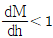
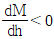
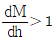
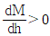
(정답률: 74%)
58. 다음 중 전리층의 종류에 대한 설명으로 틀린 것은?
- D층은 태양의 고도와 밀접한 관계가 있어 야간에는 사라진다.
- F층은 주간에는 2개의 층으로 분리되어 있다가 야간에는 두 층이 합쳐진다.
- Es층은 9~11월 중에 생기며, 야간에 주로 발생한다.
- E층의 전자밀도의 최대는 주간에 발생한다.
(정답률: 69%)
59. 지표면에서 전리층을 향해 수직으로 펄스파를 발사한 후 2[ms] 후에 생기는 반사파는 어느 전리층에서 반사된 것인가?
- D층
- E층
- Es층
- F층
(정답률: 74%)
60. 다음 중 전파의 손실 예측과 관계가 없는 것은?
- 전파의 형식
- 전파통로의 거리
- 송수신 안테나의 높이
- 전파통로의 지형조건
(정답률: 58%)
4과목: 무선통신 시스템
61. 다음 중 디지털 통신에서 사용하는 채널코딩(Channel Coding)에 대한 설명으로 옳은 것은?
- 공간영역의 중복성을 제거하여 영상신호를 압축하는 것이다.
- 정보신호에 따라 반송파의 진폭 또는 주파수를 변화시키는 것이다.
- 데이터 전송 중에 발생하는 다양한 채널오류를 방지하여 통신 능률을 향상시키는 것이다.
- 수신된 정보를 송신측에 되돌려주어 송신측에서 착오발생을 점검하는 것이다.
(정답률: 73%)
62. 다음 중 18[kHz]까지 전송할 수 있는 PCM(Pulse Code Modulation) 시스템에서 요구되는 표본화 주파수로 적합한 것은?
- 9[kHz]
- 18[kHz]
- 30[kHz]
- 36[kHz]
(정답률: 78%)
63. 다음 전파의 성질 중 지구 등가 반경과 가장 관계가 깊은 것은?
- 반사
- 굴절
- 감쇠
- 회절
(정답률: 76%)
64. 다음 중 다중경로 페이딩 등에 의해 수신된 신호가 ISI(Inter Symbol Interface) 현상이 발생될 경우 이를 보정하기 위해 필요한 것은?
- SAW 필터
- 등화기
- Expander
- Divertsity 컴바이너
(정답률: 76%)
65. 다음 중 마이크로파 통신망 치국 계획시 고려 사항으로 틀린 것은?
- 총 경로 손실
- 전력 소모율
- 통신망의 성능
- 총 장비 이득
(정답률: 60%)
66. 다음 마이크로 주파수 밴드 중 주파수가 낮은 것에서 높은 순서로 바르게 나열한 것은?
- C - L - X - Ka
- S - X - Ka - Ku
- L - C - K - Ka
- X - L - K - Ku
(정답률: 76%)
67. 지상에서 통신위성으로 통신하는 경우 통화지연은 약 얼마인가? (단, 위성고도는 35,863[km]이다.)
- 0.12초
- 0.24초
- 0.36초
- 0.48초
(정답률: 61%)
68. 이동통신에서 ″단말이 현재 셀에서 다른 셀로 이동할 때, 현재 셀의 채널 연결을 해제한 후에 이동할 셀과 채널 연결하는 기술″을 무엇이라고 하는가?
- 소프트 핸드오프(Soft Hand-off)
- 소프터 핸드오프(Softer Hand-off)
- 하드 핸드오프(Hard Hand-off)
- 로밍(Roaming)
(정답률: 76%)
69. CDMA 이동통신 시스템에서 주파수 재상용 계수가 1, 주파수 대역폭 25[MHz], 채널 대역폭 1.25[MHz] 및 RF 채널당 38개 호일 경우 셀당 허용 가능한 최대 호(Call) 수는?
- 380
- 570
- 760
- 950
(정답률: 71%)
70. 우리나라 지상파 DMB의 데이터 다중화 기술로 사용되고 있는 방식은?
- CDMA
- CSMA-CD
- OFDM
- TDMA
(정답률: 79%)
71. 방송미디어로 초고속인터넷을 통해 통신과 방송이 융합된 형태로 서비스를 제공하는 것은?
- DMB
- IPTV
- BcN
- D-TV
(정답률: 85%)
72. 다음 중 오류제어, 동기제어, 흐름제어 등의 각종 제어 절차에 관한 제어 정보에 대해 정의하는 프로토콜의 기본 요소는?
- 포맷(Format)
- 구문(Syntax)
- 의미(Semantics)
- 타이밍(Timing)
(정답률: 78%)
73. 다음 중 2개의 프로토콜 개체(Entity)가 초기의 시작, 중간의 체크 포인트 기능, 통신 종료 등을 수행할 수 있도록 두 개체를 같은 상태로 유지시키는 프로토콜 기능은?
- 동기화(Synchronization)
- 순서결정(Sequencing)
- 주소지정(Addressing)
- 다중화(Multiplexing)
(정답률: 82%)
74. 다음 중 무선 프로토콜의 계층관점에서 캡슐화(Encapsulation)에 대한 설명으로 옳은 것은?
- 상위 계층으로 정보를 올려 보내기 전에 캡슐화를 수행한다.
- 하위 계층으로 정보를 내려 보내기 전에 캡슐화를 수행한다.
- 상위나 하위 계층으로 정보를 보내기 전에 캡슐화를 수행한다.
- 상대방의 동일 계층으로 정보를 보내기 전에 캡슐화를 수행한다.
(정답률: 76%)
75. 다음 중 데이터링크 계층에서 기기를 식별할 때 사용하는 것은?
- IP 주소
- MAC 주소
- 포트번호
- 시리얼번호
(정답률: 75%)
76. 다음 중 애드혹 네트워크(Ad-hoc Network)에 대한 설명으로 옳은 것은?
- 네트워크의 구성 및 유지를 위한 기지국이 필요하다.
- 독립형 네트워크를 구성할 수 없다.
- 특정 호스트가 라우팅 기능을 담당한다.
- 네트워크 토폴로지가 동적으로 변한다.
(정답률: 60%)
77. 다음 중 이동통신 시스템에서 중계기 발진을 방지하기 위한 기지국 수신 레벨과 중계기 수신 레벨간 최소한의 편차로 적합한 것은?
- 3[dB] 이상
- 5[dB] 이상
- 9[dB] 이상
- 13[dB] 이상
(정답률: 52%)
78. 대한민국 지상파 디지털 TV 전송방식의 한 채널당 대역폭은?
- 3[MHz]
- 4[MHz]
- 5[MHz]
- 6[MHz]
(정답률: 72%)
79. 통신 시스템의 장애(Fault)에 대처하는 단계 중 다음 괄호 안에 적합한 것은?
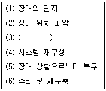
- 장애의 제거
- 장애의 보류
- 장애의 격리
- 장애의 분류
(정답률: 76%)
80. 다음 중 WPA(Wi-Fi Protected Access)의 요소가 아닌 것은?
- TKIP(Temporal Key Integrity Protocol)
- EAP(Extensible Authentication Protocol)
- 802.1X
- WEP(Wire Equivalent Privacy)
(정답률: 71%)
5과목: 전자계산기 일반 및 무선설비기준
81. 다음 스위칭 회로의 논리식으로 옳은 것은?
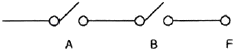
- F=A+B
- F=AㆍB
- F=A-B
- F=A/(B+A)
(정답률: 83%)
82. 2진수 7비트로 표현하는 경우 -9에 대해 부호화절댓값, 부호화 1의 보수 및 부호화 2의 보수로 변환한 것으로 옳은 것은?
- 0001001, 0110110, 0110111
- 1001001, 0110110, 1110111
- 1001001, 1110110, 1110111
- 1001001, 0110110, 0110111
(정답률: 73%)
83. 다음 중 자료의 논리적 구성에 대한 설명으로 틀린 것은?
- 필드(Field) : 자료처리의 최소단위이다.
- 파일(File) : 동일한 성질이나 유형을 지닌 레코드들의 집합이다.
- 레코드(Record) : 하나 이상의 필드가 모여 구성된다.
- 데이터베이스(Database) : 조직내의 응용프로그램들이 공동으로 사용하기 위한 공동의 파일 집합이다.
(정답률: 65%)
84. 다음 중 ASCII 코드에 대한 설명으로 틀린 것은?
- 미국표준협회에서 만든 미국 표준 코드이다.
- 7비트의 데이터 비트와 패리티 비트 1비트를 추가한다.
- 7비트의 데이터 비트 중 앞의 7, 6, 5, 4비트는 존 비트로 사용된다.
- 데이터 통신용 문자 코드로 많이 사용되고 128문자를 표시한다.
(정답률: 76%)
85. 다음 중 스케줄링에 대한 설명으로 틀린 것은?
- 스케줄링이란 프로세스들의 자원 사용 순서를 결정하는 것을 말한다.
- 선점 기법은 프로세스가 점유하고 있는 자원을 다른 프로세스가 빼앗을 수 있는 기법을 말한다.
- 선점 기법은 우선순위가 높은 프로세스가 급히 수행되어야 할 경우 사용된다.
- 비선점 기법은 실시간 대화식 시스템에서 주로 사용된다.
(정답률: 67%)
86. 일정시간 모여진 변동 자료를 어느 시기에 일괄해서 처리하는 방법은?
- 리얼 타임 프로세싱(Real Time Processing) 방식
- 배치 프로세싱(Batch Processing) 방식
- 타임 세어링 시스템(Time Sharing System) 방식
- 멀티 프로그래밍(Multi Programming) 방식
(정답률: 81%)
87. 다음 중 소프트웨어의 유형과 특징에 대한 설명으로 옳은 것은?
- 베타버전 : 개발 도중의 하드웨어/소프트웨어에 붙는 제품 버전. 개발 초기 단계에서 개발 기업 내 또는 일부의 사용자에게 배포하여 시험하는 초기 버전
- 알파버전 : 소프트웨어를 정식으로 발표하기 전에 발견하지 못한 오류를 찾아내기 위해 회사가 특정 사용자들에게 배포하는 시험용 소프트웨어
- 프리웨어 : 별도로 판매되는 제품들을 묶어 하나의 패키지로 만들어 판매하는 형태. 컴퓨터 시스템을 구성하는 하드웨어 장치와 프로그램 등을 모두 하나로 묶어 구입하는 방법
- 공개소프트웨어 : 누구나 자유롭게 사용하고 수정하거나 재 배포할 수 있도록 공개하는 소프트웨어. 누구에게나 이용과 복제, 배포가 자유롭다는 뜻의 소프트웨어
(정답률: 74%)
88. 다음 중 운영체제가 제공하는 소프트웨어 프로그램이 아닌 것은?
- 스택(Stack)
- 컴파일러(Compiler)
- 로더(Loader)
- 응용 패키지(Application Package)
(정답률: 71%)
89. 마이크로프로세서를 구성하는 요소 장치로 데이터 처리과정에서 필수적으로 요구되는 것들로 올바르게 짝지어진 것은?
- 제어장치, 저장장치
- 연산장치, 제어장치
- 저장장치, 산술장치
- 논리장치, 산술장치
(정답률: 83%)
90. 다음 중 레지스터에 대한 설명으로 틀린 것은?
- 레지스터는 프로세서 내부에 위치한 저장소(Storage)이다.
- 어커뮬레이터(Accumulators)는 레지스터의 일종이다.
- 특정한 주소를 지정하기 위한 레지스터를 스테터스(Status) 레지스터라 부른다.
- 레지스터는 실행과정에서 연산결과를 일시적으로 기억하는 회로이다.
(정답률: 76%)
91. 중파방송의 경우 블랭킷에어리어는 지상파 전계강도가 미터마다 몇 볼트 이상인 지역을 말하는가?
- 10볼트
- 5볼트
- 3볼트
- 1볼트
(정답률: 50%)
92. 다음 중 무선국을 개설한자가 무선설비를 위탁운용하거나 공동으로 사용하는 경우에 대한 조건으로 적합하지 않은 것은?
- 전파가 능률적으로 발사될 수 있는 곳에 설치할 것
- 고주파응용기기와 같이 사용할 경우 차단벽을 설치할 것
- 이미 시설된 무선국의 운용에 지장을 주지 아니할 것
- 무선설비로부터 발사되는 전파가 인근 주택가의 방송수신에 장애를 주지 아니할 것
(정답률: 70%)
93. “방송통신기자재 등의 적합성 평가에 관한 고시”에 의한 용어 정의 중에서 “기본모델과 전기적인 회로ㆍ구조ㆍ기능이 유사한 제품군으로 기본모델과 동일한 적합성평가번호를 사용하는 기자재”는 무엇이라 하는가?
- 기본모델
- 변경모델
- 동일모델
- 파생모델
(정답률: 87%)
94. 적합성평가를 받은 사항을 변경하고자 할 때 변경신고서 제출에 대한 처리기간으로 옳은 것은?
- 5일
- 7일
- 10일
- 15일
(정답률: 52%)
95. “거짓이나 그 밖의 부정한 방법으로 적합성평가를 받은 경우”에 해당되는 법령 처분기준은?
- 적합성평가 취소
- 업무중지 6개월
- 생산중지
- 수입중지
(정답률: 87%)
96. DSC(Digital Selective Calling)의 수신메시지는 정보를 읽기 전까지 저장되고, 수신 후 몇 시간이 지난 후에 삭제될 수 있어야 하는가?
- 12시간
- 24시간
- 48시간
- 72시간
(정답률: 80%)
97. 다음 문장의 괄호 안에 적합한 것은?
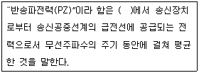
- 정상동작 상태
- 무변조 상태
- 송신장치의 급전 상태
- 정격 출력 상태
(정답률: 66%)
98. 전력선 통신설비 및 유도식 통신설비에서 발사되는 고조파ㆍ저조파 또는 기생발사강도는 기본파에 대하여 몇 데시벨 이하이어야 하는가?
- 10데시벨
- 30데시벨
- 50데시벨
- 60데시벨
(정답률: 69%)
99. 다음 문장의 괄호 안에 들어갈 용어들로 맞게 짝지어진 것은?
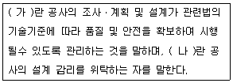
- 가 : 설계감리, 나 : 시공자
- 가 : 설계감리, 나 : 발주자
- 가 : 시공감리, 나 : 발주자
- 가 : 시공감리, 나 : 시공자
(정답률: 76%)
100. 다음 중 무선설비 설계업무 수행절차의 수행업무 내용으로 틀린 것은?
- 착수단계의 활동내용은 설계목적과 목표, 추진방안, 설계개요 및 법령 등 각종 기준을 검토한다.
- 준비단계의 활동내용은 예비타당성조사, 기술적 대안 비교ㆍ검토, 기본 공정표 작성을 행한다.
- 설계단계는 기본설계와 실시설계로 분류하며, 실시설계의 활동 내용으로는 기본설계 결과의 검토, 설계요강의 결정 및 설계지침을 작성한다.
- 설계심의단계의 활동내용은 설계목적 적합성 여부 심의, 자문단의 의견 수렴 및 반영을 행한다.
(정답률: 57%)